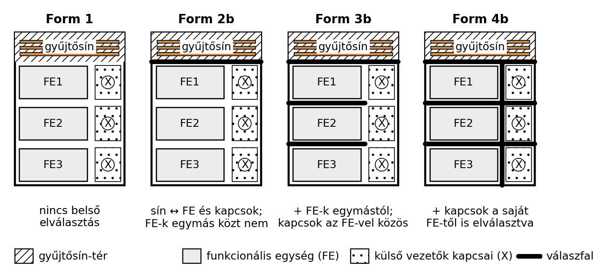

Amikor egy villanyszerelő lakáselosztót cserél, vagy egy műhelyben új motorvezérlő szekrényt szerel, ritkán gondol arra, hogy az általa összeállított doboz jogi és szabványügyi szempontból elosztóberendezés. Mégis ezen múlik, hogy az elkészült szerkezetet át lehet-e adni, milyen dokumentumokat kell mellékelni, és ki felel akkor, ha később zárlat vagy érintésvédelmi hiba miatt baleset történik. A gyakorlatban gyakori félreértés, hogy „a kismegszakító típusvizsgált, tehát az elosztó is megfelelő”. Ez nem igaz: az elosztóberendezés önálló termék, amelyre külön szabványsorozat vonatkozik, és amelynek megfelelőségét a gyártónak kell igazolnia. Ebből a fejezetből megtanulod, mi a különbség a gyártói rendszerből épített és az egyedi konstrukciójú elosztó között (a régi „típusvizsgált” fogalom helyett tervezési igazolás), ki számít gyártónak, mi a darabigazolás (rutinvizsgálat) szerepe, és milyen jelölésekkel, dokumentumokkal kell egy elosztót átadni.
Egy ipari létesítményben a hálózati betáplálástól a végfogyasztókig minden szinten elosztóberendezés található, csak más-más feladattal, árammal és zárlati szilárdsággal. A szintek kapcsolatát (transzformátor → főelosztó → alelosztók → végáramkörök) az ipari elosztóhálózatok egyvonalas áttekintő rajza mutatja; az alábbi tabló azt, hogyan néz ki a négy jellegzetes elosztótípus – azonos léptékben, egy 1,75 m magas emberalakhoz viszonyítva.
Ábraolvasás. A felső szinten a főelosztó (a) fogadja a közcélú hálózat vagy a helyi transzformátor betáplálását: padlón álló, mezős szekrénysor, felül gyűjtősín-térrel, mert itt nagy a névleges és a zárlati áram. Az MCC (b) fiókjai egy-egy motor indítóját hordozzák, a gépi vezérlőszekrény (c) egy gép vezérlését és motorleágazásait, az épületelosztó (d) a lakó- és középületek végáramköreit. Egy villanyszerelő jellemzően az alelosztókat, gépelosztókat, lakáselosztókat vagy az MCC-k egyes fiókjait szereli, ezért ezekkel nap mint nap találkozik. Melyik típusnál a legnagyobb a zárlati igénybevétel, és miért ott van a gyűjtősín-tér külön?
Definíció. Elosztóberendezés (kapcsoló- és vezérlőberendezés). Az elosztóberendezés olyan, a gyártó által összeállított villamos szerkezet, amely egy vagy több kapcsoló-, védő-, vezérlő-, mérő- vagy jelzőkészüléket tartalmaz, és amelyet villamos energia elosztására, kapcsolására, vezérlésére vagy védelmére terveztek. A pontos meghatározást az MSZ EN 61439-1 aktuális kiadása adja meg.
Definíció. Gyártó (elosztóberendezés-gyártó). Az a természetes vagy jogi személy, aki az elosztóberendezést forgalomba hozza, vagy aki a tervezésért és a legyártásért felelős. A villanyszerelő, aki egyedi elosztót épít, a szabvány értelmében elosztóberendezés-gyártónak minősül. Ennek jogi következményei vannak: neki kell gondoskodnia a tervezési igazolásról (egyedi konstrukciónál), a darabigazolásról (rutinvizsgálatról), a jelölésről és a megfelelőségi nyilatkozatról. A pontos felelősségi szabályokat a hatályos magyar műszaki biztonsági előírások és a szabvány aktuális kiadása tartalmazzák. (ellenőrizendő: a felelősségi kör jogi megfogalmazása)
Definíció. Eredeti gyártó (original manufacturer). Az a szervezet, amely az elosztóberendezés-rendszert (kapcsolóberendezés-családot) kifejlesztette, és a tervezési igazolást elvégezte. Az eredeti gyártó és az elosztóberendezés-gyártó lehet ugyanaz a szervezet, de lehet két különböző is. (ellenőrizendő: az MSZ EN 61439-1 hatályos magyar terminológiája)
Definíció. Tervezési igazolás (design verification). Annak igazolása, hogy a konstrukció megfelel a szabvány követelményeinek (melegedés, zárlati szilárdság, szigetelés, védettség, mechanikai tulajdonságok stb.). Három módszer létezik: vizsgálat, számítás vagy összehasonlítás már igazolt referenciakonstrukcióval, valamint tervezési szabályok alkalmazása; hogy melyik módszer melyik követelményre engedett, azt a szabvány adja meg. A tervezési igazolás a konstrukcióra vonatkozik, nem minden legyártott példányra.
Definíció. Darabigazolás (rutinigazolás, routine verification). Minden egyes legyártott elosztóberendezésen elvégzendő igazolás, amely az adott példány gyártási vagy szerelési hibáit tárja fel. Jellemző elemei a szemrevételezés, a védővezető-folytonosság ellenőrzése, a szigetelési ellenállás mérése és a működési próbák. A konkrét lépéseket a szabvány aktuális kiadása és a gyártói dokumentáció határozza meg. (ellenőrizendő: a darabigazolás pontos listája)
Definíció. Gyártói rendszerből, a gyártói utasítás szerint épített elosztóberendezés. Olyan elosztó, amelynek konstrukcióját az eredeti gyártó már igazolta, és az elosztóberendezés-gyártó (pl. a szerelő) a gyártói utasításnak megfelelően, eltérés nélkül, a rendszer jóváhagyott elemeiből építi. Ilyen lehet például egy moduláris lakáselosztó-család vagy egy MCC-rendszer.
Definíció. Egyedi konstrukciójú elosztóberendezés. Olyan elosztó, amelyet egy adott projekthez, konkrét kapcsolási rajz és elrendezési terv alapján, a gyártói rendszer utasításaitól eltérően, vagy rendszer nélkül építenek, jellemzően egyszeri példányban. Ebben az esetben a tervezési igazolást az elosztóberendezés-gyártónak kell elvégeznie erre az egyedi konstrukcióra. Az „egyedi” kifejezés nem azt jelenti, hogy az elosztóra nem vonatkoznak követelmények, hanem csak azt, hogy nem sorozatgyártásról van szó.
Régi terveken. A korábbi MSZ EN 60439 a „típusvizsgált (TTA)” és a „részlegesen típusvizsgált (PTTA)” fogalmat használta; ezeket az MSZ EN 61439 a tervezési igazolással váltotta fel (az MSZ EN 60439 jelölést lecserélték). Ma „típusvizsgált” minősítés önmagában nem igazolja a megfelelőséget. (ellenőrizendő: az MSZ EN 61439-1 hatályos magyar terminológiája)
Szabvány. MSZ EN 61439 sorozat. A kisfeszültségű kapcsoló- és vezérlőberendezések fő szabványa az MSZ EN 61439 sorozat. Az általános rész (MSZ EN 61439-1) tartalmazza a fogalmakat, az igazolási módszereket, a vizsgálatokat és a dokumentációs követelményeket. Az egyes alkalmazási részek az ipari kapcsolóberendezésekre (MSZ EN 61439-2), az épületelosztókra (MSZ EN 61439-3) és más speciális elosztótípusokra vonatkoznak. A pontos követelményeket, határértékeket és vizsgálati módszereket mindig az aktuális kiadásból, valamint a nemzeti kiegészítésekből kell ellenőrizni.
A legfontosabb gyakorlati különbség a felelősség és az igazolás módja.

Ábraolvasás. Az ábra a döntési kérdéssel indul: gyártói rendszerből, a gyártói utasítástól eltérés nélkül épül-e az elosztó. Ha igen (A ág), a konstrukció tervezési igazolását (melegedés, zárlati szilárdság, IP, szigetelés) az eredeti gyártó már elvégezte; ha nem (B ág, egyedi konstrukció), ezt az elosztóberendezés-gyártónak – sokszor magának a szerelőnek – kell elvégeznie számítással, összehasonlítással vagy vizsgálattal. A darabigazolás (rutinvizsgálat) minden példányon, valamint az adattábla, a dokumentáció és a megfelelőségi nyilatkozat mindkét ágon az elosztóberendezés-gyártó feladata.
A gyártói rendszerből épített elosztó esetén az eredeti gyártó egy adott elosztócsaládra – például egy moduláris falon belüli elosztóra vagy egy MCC fiókos rendszerre – elvégezte a tervezési igazolást. Ez magában foglalja például a melegedési vizsgálatot, a zárlati szilárdság igazolását, a védettség (IP) ellenőrzését és a mechanikai vizsgálatokat. A szerelő, aki ezt a rendszert a gyártói előírások szerint, jóváhagyott elemekből építi, felhasználhatja az eredeti gyártó igazolásait, de a darabigazolást és a példányra vonatkozó megfelelőségi nyilatkozatot elosztóberendezés-gyártóként akkor is neki kell elkészítenie. (ellenőrizendő: a gyártói rendszerből épített elosztó feltételei, MSZ EN 61439-1)
Az egyedi konstrukciójú elosztó esetén nincs mögötte rendszerszintű igazolás. Ilyenkor az elosztóberendezés-gyártó – sokszor maga a villanyszerelő – felelős azért, hogy a tervezési igazolást elvégezze. Ez nem mindig igényel drága laborvizsgálatot: a szabvány lehetőséget ad arra, hogy bizonyos követelményeket számítással, összehasonlítással vagy a gyártói adatlapokból származó igazolásokkal ellenőrizzenek. Például a zárlati szilárdságot egy adott sínrendszerre a sín gyártójának adatlapja is igazolhatja, ha a szerelés megfelel az ott leírt feltételeknek. (ellenőrizendő: a tervezésellenőrzési módszerek alkalmazási feltételei)
Egyedi konstrukciónál követelményenként kell eldönteni, hogyan igazolható. Az X az adott követelményre elfogadott módszert jelöli; a V vizsgálat, az Ö összehasonlítás igazolt referenciakonstrukcióval, a T értékelés tervezési szabályok szerint.
| Követelmény | V | Ö | T | Szokásos út kisebb egyedi szekrénynél |
|---|---|---|---|---|
| anyagok és részek szilárdsága | X | a szekrénygyártó igazolása | ||
| burkolat védettsége (IP) | X | X | gyártói szekrény, IP-tartó tömszelencék | |
| lég- és kúszóutak | X | X | készülékek adatai, szemrevételezés | |
| áramütés elleni védelem, a védőáramkör folytonossága | X | X | gyártói PE-rendszer; Ö a zárlati részre | |
| kapcsoló- és egyéb készülékek beépítése | X | gyártói beépítési előírás | ||
| belső áramkörök és csatlakozások | X | terv, gyártói nyomatékok | ||
| külső vezetők kapcsai | X | sorkapocs adatlapja | ||
| szigetelési tulajdonságok | X | X | rendszergyártói igazolás | |
| melegedés | X | X | X | számítás (lásd 34.2 hőmérlege) |
| zárlati szilárdság | X | X | mentesség, vagy Ö a rendszergyártó adataival | |
| elektromágneses összeférhetőség (EMC) | X | X | megfelelő készülékek, gyártói szerelési előírás | |
| mechanikai működés | X | működtetés a gyártói vizsgálat alapján |
A gyakorlatban az egyedi szekrény leggyakrabban rendszergyártói szekrényből és sínrendszerből, a gyártói utasítás szerint készül. Ilyenkor a legtöbb tételre a rendszergyártó igazolása használható. A saját készülékösszeállítás miatt viszont a melegedést neked kell igazolnod (kisebb, egyterű szekrénynél, jellemzően 630 A-ig egyszerűsített számítással – ellenőrizendő), és dokumentálnod kell, hogy minden más a gyártói utasítás szerint készült. Zárlati szilárdság alól mentesség adható, ha a várható zárlati áram kicsi (például a névleges rövid idejű áramtűrés vagy a feltételes zárlati áram 10 kA-ig), illetve ha áramkorlátozó előtét-készülék védi a berendezést (ellenőrizendő a feltétel pontos szövege).
A darabigazolás (rutinvizsgálat) minden elkészült példányon a gyártási és szerelési hibákat keresi.
| Tétel: mit vizsgálsz | Módszer, eszköz | Elfogadás |
|---|---|---|
| 1. burkolat védettsége (IP) | szemrevétel: tömszelencék, vakdugók, tömítések, fedelek | a dokumentált IP megmarad |
| 2. lég- és kúszóutak | szemrevétel, kétség esetén mérés | a tervezési értékek nem csökkentek |
| 3. áramütés elleni védelem, védőáramkör | szemrevétel (ajtó-földelőszalag, PE-sín), szúrópróbás mérés | minden PE-kötés megvan; pl. ≤ 0,1 Ω (tanulási érték) |
| 4. beépített készülékek | készülékjegyzék, gyártói beépítési előírás | egyezik |
| 5. belső áramkörök és csatlakozások | nyomatékkulcs szúrópróbaként, jelölőcsík | gyártói nyomaték |
| 6. külső vezetők kapcsai | rajz | szám, típus, keresztmetszet, jelölés egyezik |
| 7. mechanikai működés | kapcsolók, reteszelések, zárak működtetése | akadálytalan, reteszel |
| 8. szigetelési tulajdonságok | feszültségpróba, vagy kisebb (pl. ≤ 250 A betáplálási védelmű) szekrénynél szigetelésmérés ≥ 500 V DC | áramkörönként ≥ 1000 Ω/V a földhöz mért névleges feszültségre (230 V-nál ≥ 230 kΩ) |
| 9. huzalozás, működés, funkció | rajz szerinti ellenőrzés (jelölők, színek), funkciópróba törpefeszültségű vezérléssel vagy jogosult felügyeletével | a rajz szerinti működés |
Gyakorlati sorrend.
Kitöltött jegyzőkönyv-minta (DB-M, a mért értékek tanulási minták). Gyártó: Minta Villszer Kft. (fiktív, a szerelő cég); típus: DB-M-63; gyártási szám: 2026/017; V; A; IP54; szabvány: MSZ EN 61439-2.
| Tétel | Eredmény | Értékelés |
|---|---|---|
| IP, lég- és kúszóutak | szemrevételezés | megfelelt |
| PE-sín – ajtó | 0,03 Ω | megfelelt |
| PE-sín – szerelőlemez | 0,02 Ω | megfelelt |
| készülékek, kapcsok | a jegyzék és a rajz szerint | megfelelt |
| nyomaték-szúrópróba | 10 kötés, mind gyártói érték | megfelelt |
| mechanikai működés | kapcsolók, ajtózár | megfelelt |
| szigetelés 500 V DC, főáramkör L1, L2, L3 – PE | > 200 MΩ | megfelelt |
| szigetelés, vezérlőkör (a T10 szekunderén; a 0 V–PE kötés bontva, utána helyreállítva) | > 100 MΩ | megfelelt |
| funkciópróba | Q11–Q16 próbagombja; K11–K16 behúz és elenged; S0 leállít | megfelelt |
| aláírás, dátum | …………… |
A szerelés közbeni ellenőrzésekhez lásd Minőségbiztosítás és szerelői ellenőrzés, az átadáshoz Szerelési dokumentáció, referenciajelölés és átadás.
Az elosztóberendezéseket a gyakorlatban a feladatuk és a beépített készülékek jellege szerint csoportosítjuk.
Ezek a típusok nem merev kategóriák: egy gépelosztó lehet egyszerre alelosztó és motorvezérlő egység is. A lényeg az, hogy a feladat és a zárlati igénybevétel határozza meg a szerkezetet és a szükséges vizsgálatokat.
Belső elválasztás (Form 1–4). A gyűjtősínes elosztókban és MCC-kben a megrendelői kiírás és az adattábla gyakran megadja a belső elválasztás formáját („Form 2b”, „Form 4b”). A forma azt mondja meg, mely terek vannak válaszfallal (burkolattal, lemezzel) elválasztva egymástól: a gyűjtősín-tér, a funkcionális egységek (pl. egy-egy leágazás vagy motorindító) és a külső vezetők csatlakozókapcsai (ellenőrizendő: MSZ EN 61439-2).
| Forma | Mit választ el | Mit jelent a szerelőnek |
|---|---|---|
| 1 | nincs belső elválasztás | minden munkához az egész elosztót le kell választani |
| 2a | a gyűjtősínt a funkcionális egységektől; a kapcsokat nem | a sín burkolt, de a kapocstér nyitott a sín felé |
| 2b | mint 2a, és a külső vezetők kapcsait is a gyűjtősíntől | a kábelbekötés helye elkülönül a síntől; a funkcionális egységek egymástól nem |
| 3a | a gyűjtősínt a funkcionális egységektől és a funkcionális egységeket egymástól; a kapcsokat a síntől nem | egy leágazás tere elkülönül a szomszédjától |
| 3b | mint 3a, és a kapcsokat a gyűjtősíntől | mint 3a, a kábelbekötés a síntől elválasztva |
| 4a | mint 3, és a kapcsok a saját funkcionális egység terében | minden leágazás a kapcsaival együtt külön rekesz |
| 4b | mint 4a, és a kapcsok a saját funkcionális egységtől is elválasztva | a kábel bekötése a készüléktértől is elkülönül |

Kövesd a vastag vonalakat: Form 2b-től felfelé a gyűjtősín-tér zárt, Form 3b-től a leágazások egymástól is elkülönülnek, Form 4b-ben pedig minden kábelbekötés saját rekeszt kap. Az elválasztás célja az érintés elleni védelem, az idegen testek bejutásának gátlása és egy belső ív terjedésének korlátozása. Fontos: a belső elválasztás nem jogosít fel feszültség alatti munkára. Egy Form 4b-s elosztó egy leágazásán is csak a munkavégzési szabályok szerint (az öt biztonsági szabály, munkaengedély, kijelölt munkavezető) szabad dolgozni; a belső forma ezeket nem írja felül (ellenőrizendő: MSZ EN 61439-2, MSZ 1585).
A funkcionális egységek kivitele. Rögzített (fix) kivitelnél a készülék a szerelőlemezhez vagy a vázhoz csavarozott, cseréje az egész egység leválasztását és kikötését igényli. Kivehető kivitelnél az egység szerszámmal, feszültségmentes állapotban kiemelhető és cserélhető, a bekötés dugaszolható. Kihúzható (fiókos) kivitelnél az egység a fő áramkör megbontása nélkül, mechanikusan húzható ki; jellemző állásai az üzem, a teszt (főáramkör bontva, segédáramkörök bekötve) és a leválasztott állás – ez az MCC-k jellegzetes kivitele.
Dokumentáció. Az elosztóberendezéshez a gyártónak legalább az alábbi dokumentumokat kell tudnia átadni:
A rajzokon a készülékek referenciajelöléseit (Q1, F1, K1, X1 stb.) kell használni, összhangban a Villamosipari dokumentáció II – gépek és készülékek részben tanultakkal. A kapcsolási rajz és az egyvonalas rajz közötti különbséget az Alaprajzok, fővezetéki terv és egyvonalas rajz alfejezet tárgyalja.
Jelölés. Minden elosztóberendezésen, jól látható helyen, adattáblát kell elhelyezni. Az adattáblán legalább a gyártó nevének vagy védjegyének, a típusjelnek, a gyártási idő azonosítójának és a vonatkozó MSZ EN 61439-X résznek szerepelnie kell; a további, jellemző adatok (az adattáblán vagy a műszaki dokumentációban):
A pontos adatkör a szabvány aktuális kiadásában és a jogszabályi előírásokban szerepel. (ellenőrizendő: az adattábla kötelező tartalma)
Egy villanyszerelő egy kis üzemben egyedi gépelosztót épített egy frekvenciaváltóhoz és egy motorhoz. A kapcsolási rajzot saját maga rajzolta meg, a készülékeket megbízható gyártóktól vette, a szerelést gondosan elvégezte, majd a szekrényt felszerelte és bekötötte. A próbaüzem sikeres volt, a motor elindult. Az elosztóra azonban nem került adattábla, és rutinvizsgálati jegyzőkönyv sem készült. Később a létesítmény szabványossági felülvizsgálatán a felülvizsgáló hiányosságként jelezte, hogy nem lehet egyértelműen azonosítani a gyártót, a névleges adatokat és a zárlati szilárdságot. A megrendelő nem tudta igazolni, hogy az elosztó megfelel a hatályos előírásoknak, ezért a berendezést pótlólagos dokumentációval, adattáblával és mérésekkel kellett utólag ellenőrizni. A tanulság: az elosztó nem akkor kész, amikor a motor elindul, hanem amikor a dokumentáció és a jelölés is rendelkezésre áll.
Biztonsági korlát. A példában szereplő munka 230/400 V hálózati feszültségen csak jogosult, arra képesített személy végezheti, a hatályos előírások szerint. Tanműhelyi gyakorlat esetén az oktató felügyelete kötelező.
Hiba 1. „A kismegszakító típusvizsgált, tehát az elosztó is
megfelelő.”
A kismegszakító valóban típusvizsgált készülék, de az elosztóberendezés
a maga egészében új termék. A melegedés, a zárlati szilárdság, a
védettség és a mechanikai kialakítás a beépítéstől függ, ezért az
elosztóra külön tervezési igazolás és darabigazolás szükséges.
Hiba 2. „Én csak összeraktam, a tervező
felel.”
A szabvány szerint aki az elosztót fizikailag legyártja, összeállítja és
forgalomba hozza, az elosztóberendezés-gyártónak minősül. A tervező
rajza fontos, de a gyártói felelősség – a rutinvizsgálat, a jelölés, a
megfelelőségi nyilatkozat – az elosztó készítőjénél van.
Hiba 3. Nincs adattábla, csak a kismegszakítók
feliratai.
A kismegszakítók feliratai az egyes áramköröket azonosítják, de az
elosztó egészének adatait nem. Az adattábla hiánya megnehezíti a
felülvizsgálatot, a karbantartást és a baleseti rekonstrukciót.
Hiba 4. A rutinvizsgálatot kihagyják, mert „úgyis
működik”.
A rutinvizsgálat nem a működést, hanem a gyártási és szerelési hibákat
keresi. Egy rosszul meghúzott kapocs vagy egy sérült szigetelés a
próbaüzemben még nem mindig okoz hibát, de később tüzet vagy áramütést
okozhat.
Gyakorlás: ennek az alfejezetnek a kidolgozott példái, gyakorlatai és megoldással ellátott feladatai az Összefoglaló feladatgyűjtemény villanyszerelő tanulóknak című kötet 34.1 szakaszában találhatók.
Az elosztóberendezés önálló termék, amelyre az MSZ EN 61439 szabványsorozat vonatkozik. Az elosztóberendezés-gyártó – gyakran maga a villanyszerelő – felelős azért, hogy a darabigazolás, a jelölés és a megfelelőségi dokumentáció elkészüljön. A gyártói rendszerből, utasítás szerint épített elosztónál az eredeti gyártó tervezési igazolására lehet támaszkodni, az egyedi konstrukciónál a tervezési igazolást az elosztóberendezés-gyártónak kell elvégeznie (a régi „típusvizsgált” fogalmat az MSZ EN 61439 lecserélte). A darabigazolást (rutinvizsgálatot) minden egyes legyártott példányon el kell végezni. Az elosztókat feladatuk szerint főelosztóra, alelosztóra, motorvezérlő központra (MCC), ipari kapcsolóberendezésre és épületelosztóra osztjuk. Az adattáblán legalább a gyártó nevét/védjegyét, a típusjelet, a gyártási idő azonosítóját és a vonatkozó MSZ EN 61439-X részt kell feltüntetni; a névleges adatok (, , , IP/IK) az adattáblán vagy a műszaki dokumentációban szerepelnek (ellenőrizendő: MSZ EN 61439-1 a jelölésről). Továbbvitt eredmény: ezek a fogalmak és követelmények alapozzák meg a Felépítés: szekrény, sínek, szerelőlemez, hűtés és fűtés alfejezetben tárgyalt fizikai kialakítást, védettséget és hőháztartást.
A fejezet a magyarországi és európai szabványrendszer, elsősorban az MSZ EN 61439 sorozat fogalomrendszerét használja. A pontos szabványszakaszok, a tervezési igazolási és darabigazolási módszerek, az adattábla kötelező adattartalma, valamint a gyártói felelősség jogi részletei a kiadás előtt ellenőrizendők az aktuális szabványkiadások és a hatályos magyar jogszabályok alapján. A szabványok tartalmát a Magyar Szabványügyi Testület által kiadott hatályos kiadásból, a szekrényrendszerek tervezési igazolását a rendszergyártó dokumentációjából kell ellenőrizni. A megadott példaértékek és értelmezések oktatási célúak, nem helyettesítik a gyártói dokumentációt és a hatósági előírásokat.